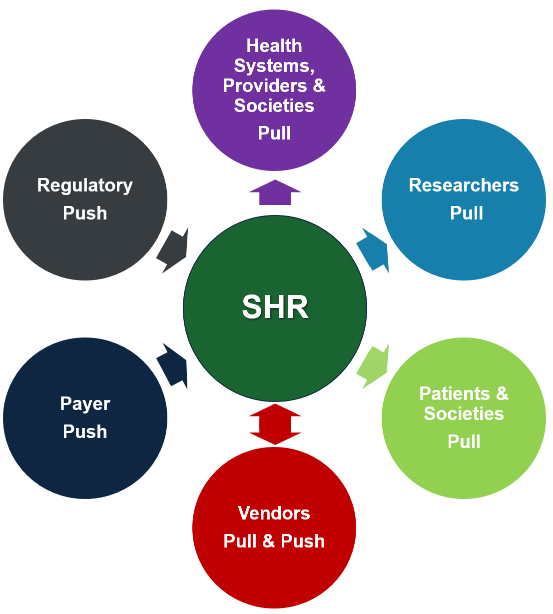

Adoption in the real world is best driven by understanding - starting during the Discovery track - of what forces will move the market to use new standards-based solutions. Forces include user demand, Government mandates, and the promise of improved care and research. Value in the real world depends on the level of adoption and the quality of the underlying, new standards-based processes and systems being adopted.
Experience shows that if work in the other tracks (e.g., Community Building, Use Cases & Planning, Standards Development, Implementation & Testing) has been done appropriately, the Use Case team should also have a clear view - even before the first system or process has been deployed with new standards - whether the prospects for Community adoption and value are strong or not.
A variety of resources are useful in driving adoption and measuring value. The Use Case Champions and their organizations (e.g., medical societies, vendors, etc.) are key, as they know, can communicate with, and often have influence across the Comnmunity of potential adopters. Champioins understand the market forces and how to leverage them. It's useful to track and communicate about adoption and the associated value for care and research. Publications of results (peer reveiwed, popular press, etc.) are useful.
As noted above, all of the tracks discussed previously will contribute to an increasingly clear understanding of the level of demand for the standards-based Use Case, and of what else could be done increase demand. It's important to leverage the Champions and community that have been built and to leverage the potential value demonstrated during pilots. Success up to this point could contribute to the following factors that help spur adoption:
The steps documented leading to this point should be aligned to maximize the possibility that all of the above are true. However, a subset can be sufficient to drive adoption of new interoperable solutions based on new standards.
A simplified illustration of the above market forces and others is shown below. Push forces result from stakeholders requiring use of new standards. Pull forces result from stakeholders requesting products that benefit from standards-based solutions. A specialty-specific verion of this graphic could be created for particular specialty communities. See also the stakeholder-specific Value Propositions on the Community Building page.

From the start of adoption of the new standard and of the systems and workflows it powers, it will be important to measure the costs and benefits through the new workflow. Such assessments will help improve the standards, workflows, and user interfaces and, when results are positive, accelerate demand, adoption, and value in an exlarging community of users.
See the Delivering Value and Growth and Impact sections of the mCODE Standard and CodeX Community Case Study for examples of the measurement and communication of value for the mCODE standard and associated Use Cases.
[NOTE: Add more]